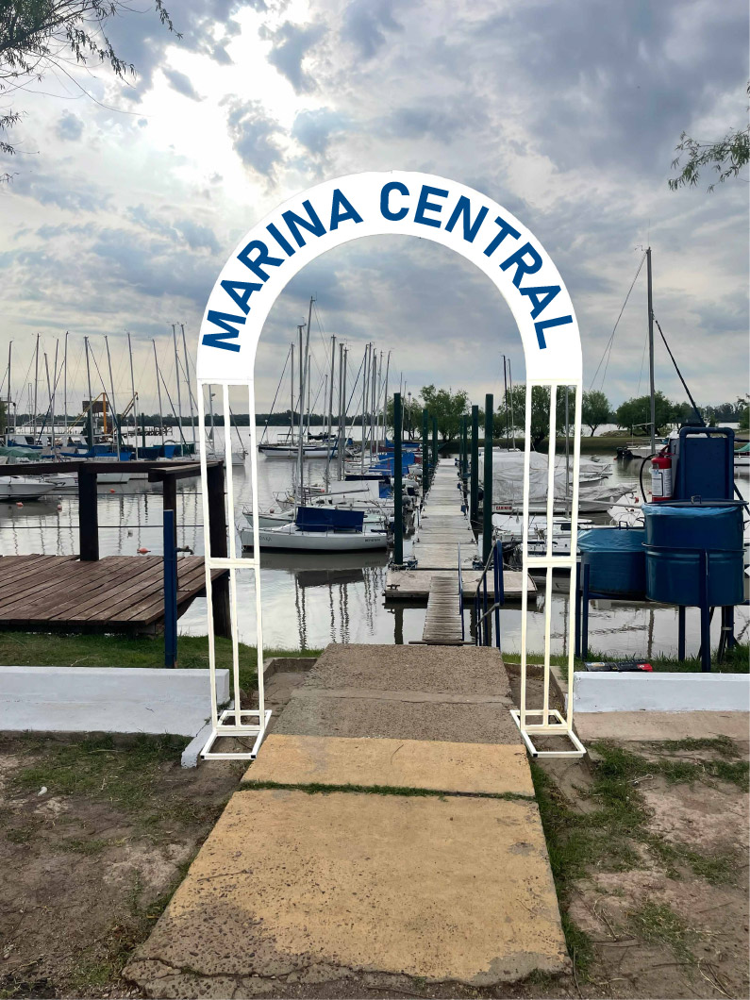
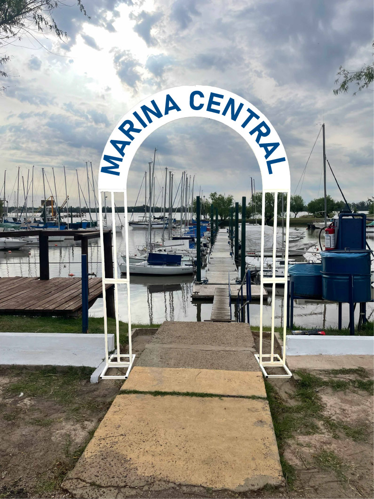

Señalítica
Sistema de orientación espacial

 

El Yacht Club Paysandú requería un sistema de señalización moderno y unificado. El desafío era resolver problemas de orientación y accesibilidad dentro de sus instalaciones (muelle, salones, baños, áreas de servicio) y asegurar que el diseño fuera duradero y coherente con la identidad marítima del club.
Diseñar un sistema de señalética completo (direccional, informativo y regulatorio) que mejorara la experiencia del usuario y facilitara la navegación intuitiva para socios y visitantes, manteniendo la estética elegante y funcional del Club.
Se desarrolló un diseño de íconos minimalistas y una paleta de colores de alto contraste para asegurar la visibilidad. Se seleccionó una tipografía clara y se utilizaron los materiales adecuados (metal/acrílico) para garantizar la resistencia a las condiciones climáticas del ambiente náutico. Se implementó una estructura modular basada en el isologo del club para asegurar la coherencia en todas las piezas.
El sistema de señalética instalado mejoró significativamente la fluidez y la orientación dentro del Club. Se logró un diseño estético que fortalece la imagen institucional y ofrece una solución práctica y de larga durabilidad para la navegación en áreas clave como accesos y salones.